止め絵では伝わらない変化・順序・道具の使い方を、10〜20秒の短い動きにした教材です。 素材棚にある「うごく」だけをここに集めました。言葉での説明が入りにくい子、一度聞いただけでは追えない子、 板書を写しながら聞くのがしんどい子に、同じ説明をそのままの形で何度でも渡せます。
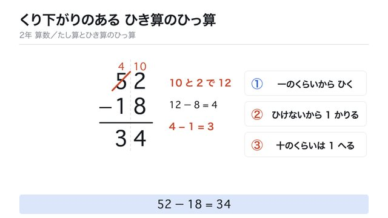
「2から8は ひけない」から始まります。十のくらいの5に線を引いて消し、上に小さく4。そこから10が出てきて、一のくらいの2の上に小さく10と書かれます。10と2で12、12ひく8は4。十のくらいは4ひく1で3。答えは34。低学年でも追えるようゆっくりの速さにしてあります。
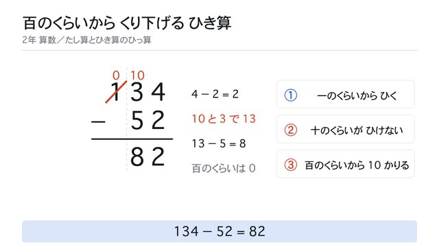
一のくらいはそのままひけます。十のくらいで「3から5は ひけない」となり、百のくらいの1を消して0にし、そこから出てきた10が十のくらいの3の上へ下ります。10と3で13、13ひく5は8。答えは82。ゆっくりの速さにしてあります。
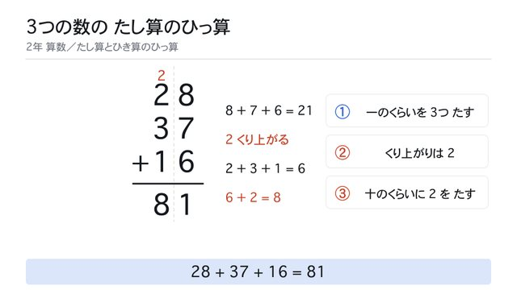
一のくらいの8と7と6をたして21。1を書いて、2が小さくなって十のくらいの上へ動きます。くり上がりが1ではなく2になるところがこの時間の新しさです。答えは81。ゆっくりの速さにしてあります。
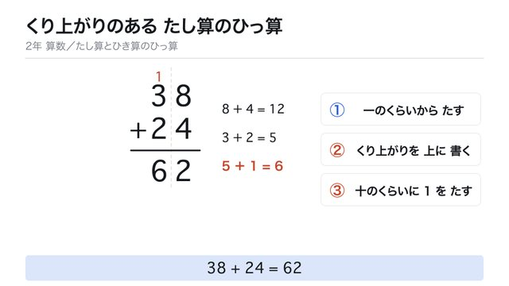
一のくらいの8と4をたして12。12をそのまま書いたあと、12の1だけが小さくなって十のくらいの上へ動き、点線のわくに入ります。3と2で5、その5に上の1をたして6。答えは62。低学年でも追えるようゆっくりの速さにしてあります。
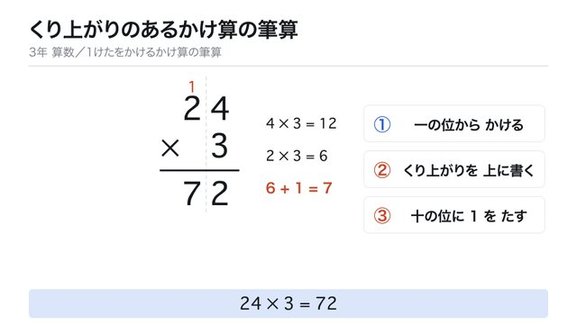
一の位の4と3をかけて12。12の1だけが小さくなって十の位の上へ動き、点線のわくに入ります。次に2と3をかけて6、その6に上の1をたして7。答えは72です。
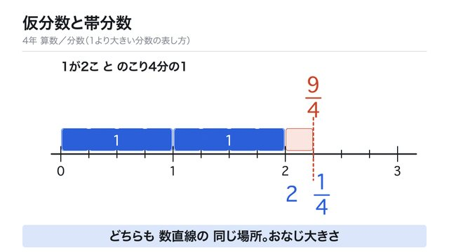
0から3までの数直線に4分の1のタイルが9こ並びます。上から4分の9が、下から2と4分の1が、同じ場所を指します。タイルが4こずつまとまって1になる動きで、2つの書き方が同じ大きさだと見えます。
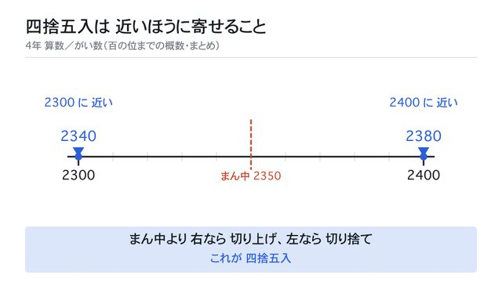
2300〜2400の数直線にまん中2350を引き、2380は右だから2400へ、2340は左だから2300へ寄ります。「4以下は下げ、5以上は上げ」を丸暗記している子に、位置として見せられます。
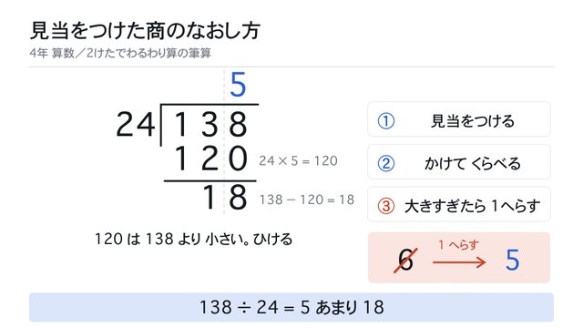
24を20とみて13÷2＝6と見当をつけ、24×6＝144を書きます。144は138より大きくてひけないので、6に赤い線を引いて消し、1へらして5に書き直します。消した6は右下の小窓に「6→1へらす→5」として最後まで残ります。
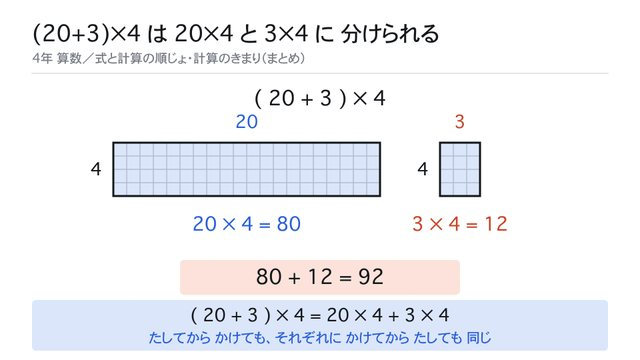
ますめの長方形（よこ23・たて4）が出て、式は23×4。よこが20と3に分かれ、切り口はたて4を通ります。右の3のぶんが離れて、20×4＝80、3×4＝12、合わせて92。
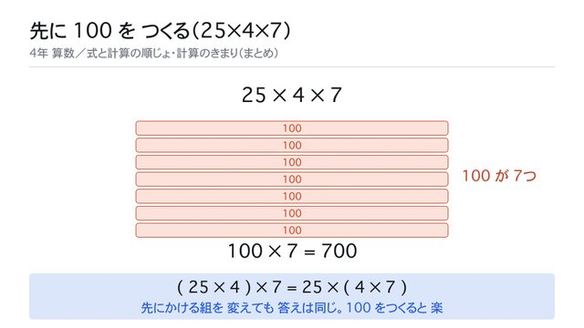
25と書いた四角が4つ。くくると「25が4つで100」となり、同じはばの100の帯になります。その帯が7本にふえて、100×7＝700。
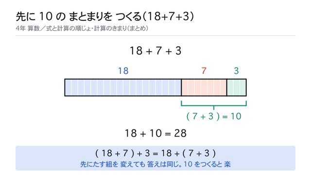
18・7・3の帯がつながっていて、式は18+7+3。左の18と7をくくると25、25+3=28。くくりが右へ動いて7と3をくくると10、18+10=28。帯は1本も動きません。
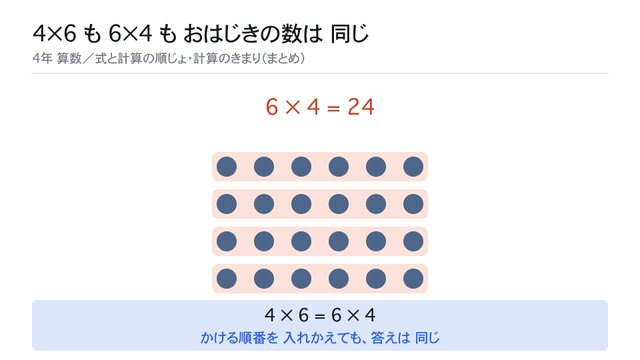
おはじきが6列4行に24こ並んでいます。たての囲みが6本出て4×6＝24。囲みがよこ4本に変わって6×4＝24。おはじきは1つも動きません。
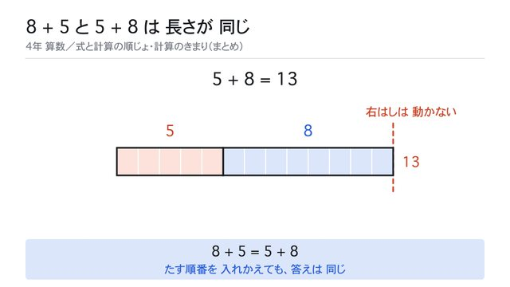
8マスの帯と5マスの帯が並び、式は8+5=13。全体の右はしに動かない点線があります。2本が上下に分かれて入れかわり、5・8の順にもどっても、右はしは動きません。式は5+8=13。
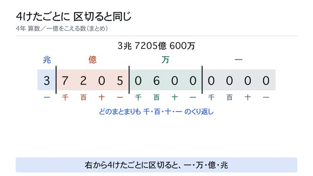
13けたの数に右から4けたごとの区切りが入り、一・万・億・兆に分かれます。どのまとまりにも千・百・十・一があることが見え、3兆7205億600万と読めます。
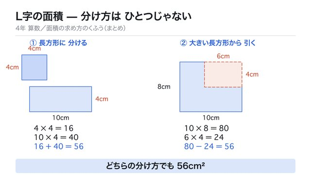
同じL字を2つ並べ、左は長方形2つに分けて 16＋40＝56、右は大きい長方形から欠けを引いて 80−24＝56。どちらでも同じ答えになることが見えます。
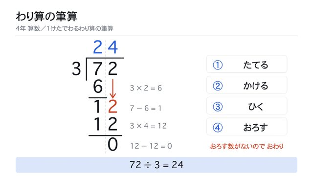
72÷3の筆算が、たてる→かける→ひく→おろすの順に1つずつ書き進みます。右の4つの札が今どの段階かを示し、おろした数は矢印とともに下りてきます。同じ順をもう一度くり返して24になります。
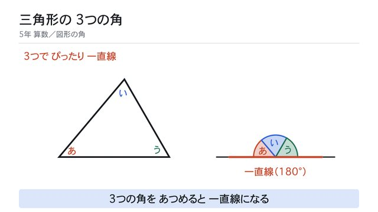
直角でも二等辺でもない三角形の3つの角に、あ・い・うの名前をつけます。3つの角が1つずつ右の直線へ動いて、となりどうしつながっていき、ちょうど半円になって直線と重なります。角の大きさの数値は出していません。
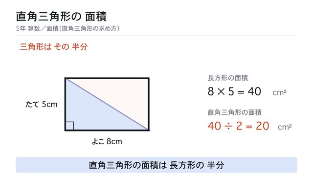
よこ8cm・たて5cmの直角三角形に、同じ形がもう1つ重なって現れ、斜辺の真ん中を中心にまわって長方形になります。長方形の面積8×5＝40cm²から、直角三角形は40÷2＝20cm²。低学年でも追えるようゆっくりの速さにしてあります。
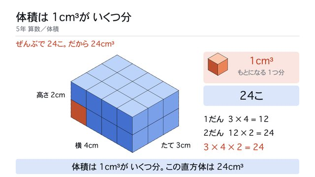
はじめにオレンジの1cm³が1つ出て、右上の見本に残ります。たて3cm・横4cm・高さ2cmのわくに、積み木を手前の列から1こずつ置いていき、カウンタが24こまで増えます。最初に置いたオレンジの1個は、積み上がったあとも左手前に見えています。1こずつ声に出して数えられるよう、ゆっくりの半分の速さ（36秒）にしてあります。
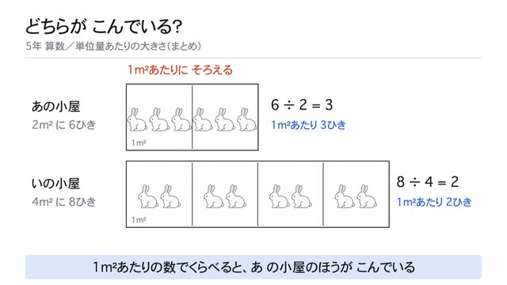
あの小屋（2m²に6ひき）といの小屋（4m²に8ひき）。うさぎが1m²のマスごとに均等に動いて、あは1マスに3ひき、いは2ひきになります。6÷2=3、8÷4=2の式が出て、あのほうがこんでいると分かります。
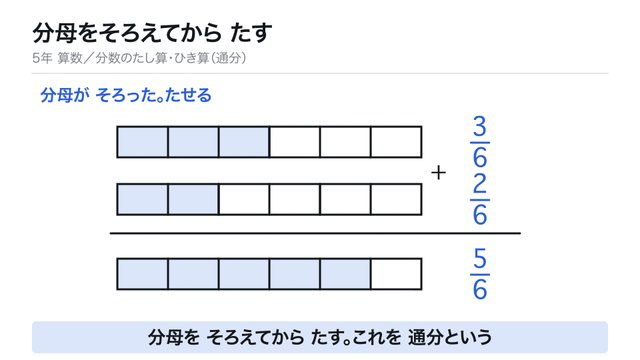
同じ長さのテープ2本に、区切りの線が引き足されて6等分になります。色をぬった部分の長さは変わらないまま、2分の1が6分の3に、3分の1が6分の2に書きかわります。答えは6分の5。低学年でも追えるようゆっくりの速さにしてあります。
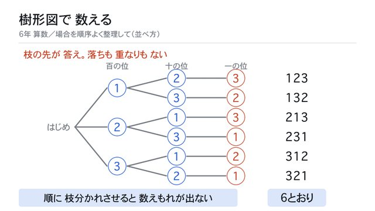
「はじめ」から3本の枝が分かれて百の位が決まり、さらに2本ずつ分かれて十の位、最後に残った1枚で一の位が決まります。枝の先に6つの数が並んで6とおり。ゆっくりの速さにしてあります。
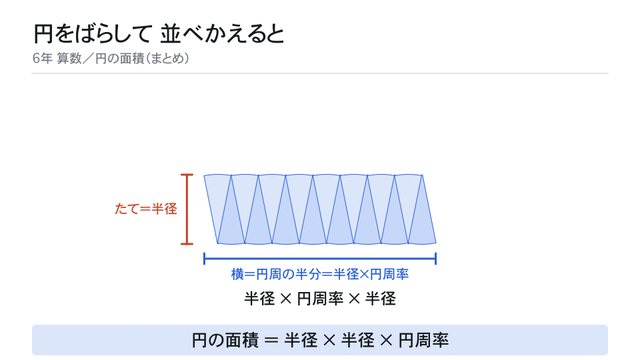
円が16等分されてばらばらになり、上下交互に並べかえられて長方形に近い形になります。たて＝半径、横＝円周の半分（半径×円周率）から、円の面積＝半径×半径×円周率が出ます。
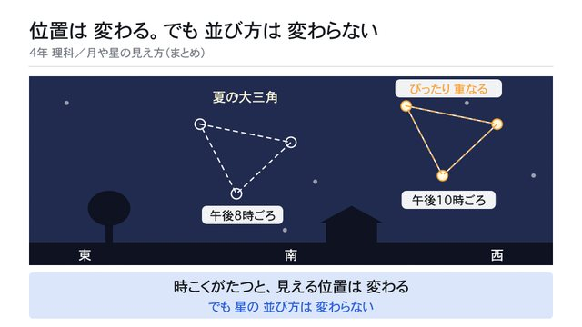
夜空に夏の大三角が出ています。午後8時ごろは南寄りの高いところ。時間がたつと、三角は形を変えないまま西寄りへ動きます。午後8時の位置には点線の記録が残り、その形をオレンジの写しにして運んで重ねると、ぴったり重なります。
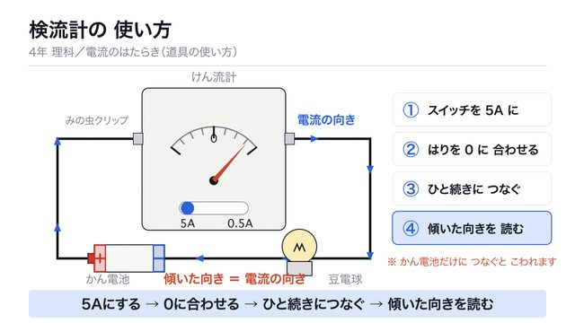
①スイッチを5Aに ②はりが0かたしかめる ③かん電池・検流計・豆電球をひと続きにつなぐ ④はりの傾いた向きを読む。電流が検流計を左から右へ通り、はりが右に傾きます。
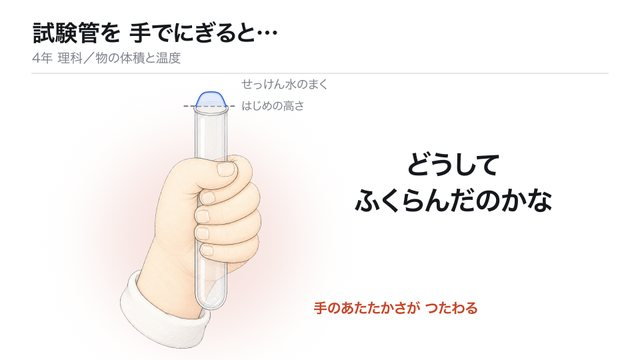
子どもの手が試験管をにぎると、口にはった平らなせっけん水のまくが上にふくらみ、はじめの高さの点線をこえます。答えは出さず「どうして ふくらんだのかな」で止まります。
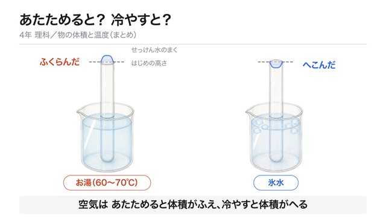
お湯（60〜70℃）と氷水に立てた2本の試験管。左のまくはふくらみ、右のまくはへこみます。最後に「空気は あたためると体積がふえ、冷やすと体積がへる」と出て止まります。
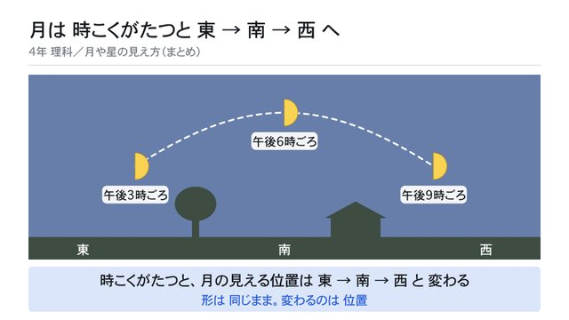
木と家のある景色の空に、右側が光った半月が出ています。午後3時ごろは東の低いところ。時間がたつと空の色が夕方の色に変わり、月は南の高いところへ。さらに時間がたって空が暗くなると、西の低いところへ動きます。3つの月はどれも同じ半月で、通った道が弧の点線で残ります。
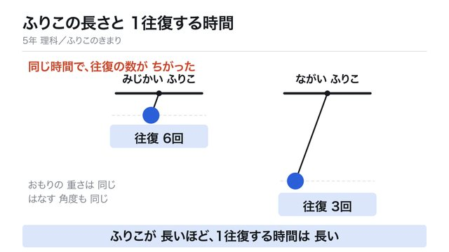
短いふりこと長いふりこを、同じ角度から同時にはなします。おもりの重さも角度も同じ。同じ時間で、短いほうは往復6回、長いほうは往復3回になります。糸の長さは25cmと100cmの比（1対4）に合わせてあります。低学年でも追えるようゆっくりの速さにしてあります。
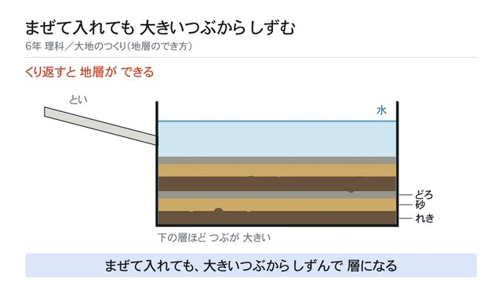
といから、れき・砂・どろのまざった土を一度に流しこみます。水がにごり、たくさんのつぶが散らばって落ちていきます。大きいつぶが先に底に着いて層になっても、水はまだにごったまま。細かいつぶが水中にうかんでいます。しばらくおくとにごりが晴れ、いちばん上にどろが積もります。もう一度流しこむと、同じ順でもう1組の層が重なります。
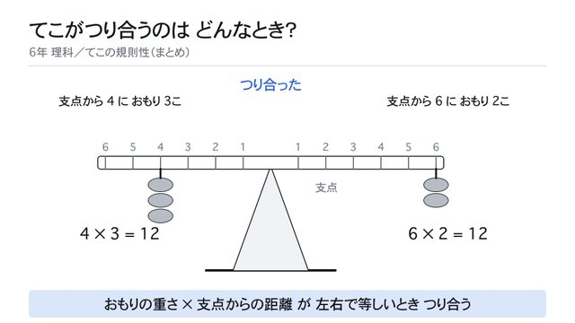
てこ実験器の左うで（支点から4）におもりを3個かけると左が下がり、右うで（支点から6）に2個かけると水平にもどってつり合います。4×3=12、6×2=12の式が出ます。
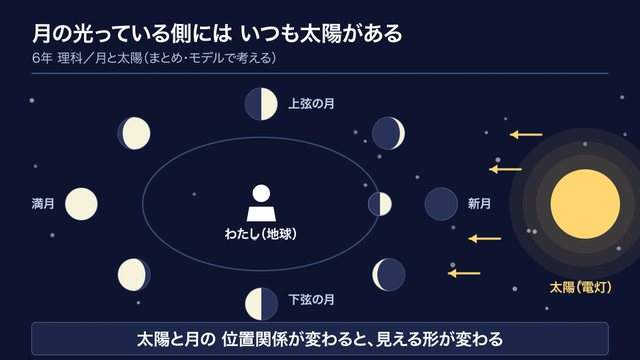
暗い部屋のモデル実験。中央にわたし（地球）、右に太陽（電灯）。ボール（月）はどの位置でも太陽側の半分だけが光っています。新月・上弦の月・満月・下弦の月の4か所でゆっくり止まりながら、「わたしから見た形」が残っていきます。